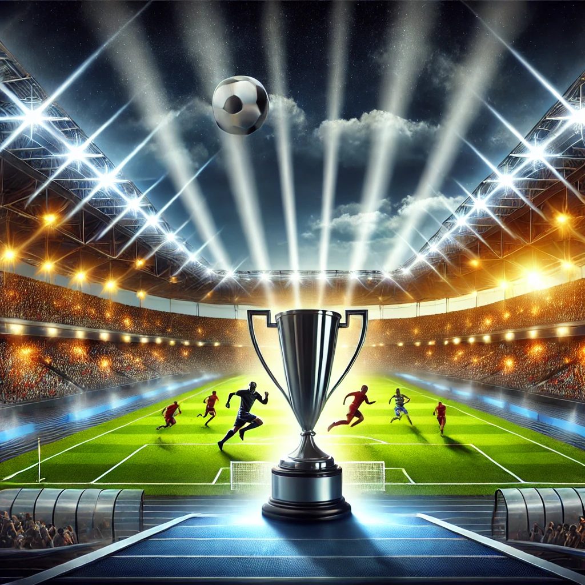

Equipo Local Gana el Campeonato
El equipo local se coronó campeón después de una emocionante final que se decidió en los últimos minutos del partido. Con un estadio lleno de aficionados emocionados, el equipo mostró una increíble determinación y esfuerzo para remontar un marcador adverso. El gol decisivo llegó en el tiempo de descuento, desatando una celebración eufórica tanto en la cancha como en las gradas. Los jugadores, visiblemente emocionados, dedicaron la victoria a su afición y destacaron el trabajo en equipo como clave del éxito. Esta victoria marca un hito en la historia del club y deja grandes expectativas para la próxima temporada.